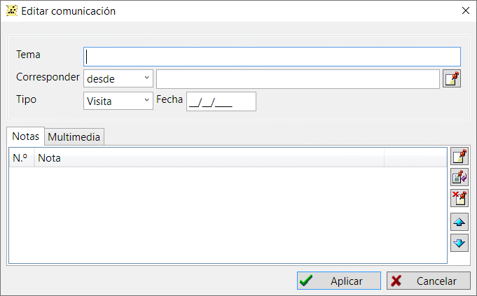

Los registros de correspondencia almacenan información sobre cartas, correspondencia con otros familiares, investigadores y archivos.
Un registro de correspondencia tiene un campo de asunto, corresponsal, tipo de relación (visita, llamada, carta, etc.) y hora de la relación. También puede añadir algunas notas de texto y contenido multimedia. Por ejemplo, puede adjuntar una grabación de la conversación o una imagen escaneada de la carta.

Puedes acceder fácilmente a toda una correspondencia utilizando la tabla unida de la pestaña "Comunicaciones" de la ventana principal. A la derecha de la tabla hay un resumen del registro, donde puedes ver información detallada y referencias a otros registros.
Ver también: Persona, Nota, Multimedia.